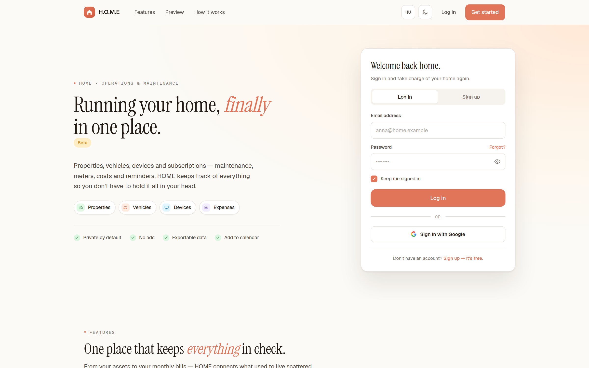
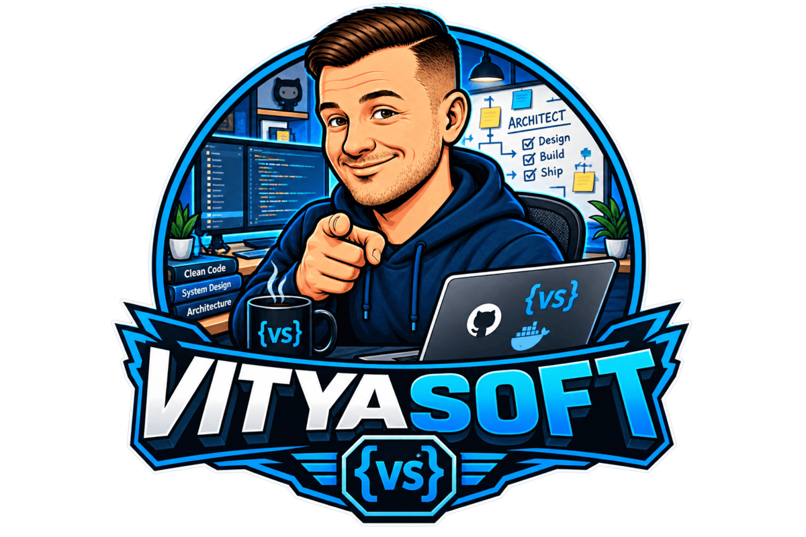

Home Operations & Maintenance Engine
HOME
A multi-tenant platform for the full lifecycle of properties, vehicles, devices and subscriptions — maintenance, meters, costs, reminders and documents in one shared system.

Vitya Softoperate / maintain / evolveProduction software
Vitya Soft is where a project becomes an operating system for real work: accounts, permissions, data, maintenance and the unglamorous details that make software dependable.
Production systems
The current flagship handles the operational lifecycle of a household across web, mobile and AI-assisted interfaces.

Home Operations & Maintenance Engine
A multi-tenant platform for the full lifecycle of properties, vehicles, devices and subscriptions — maintenance, meters, costs, reminders and documents in one shared system.
Operating standards
Permissions, tenancy and data boundaries are product features, not afterthoughts.
Architecture, operations and recovery paths stay close to the code so the system can be maintained.
A long-running product needs clear interfaces and migrations that let it evolve without losing trust.
The wider workshop
Use the Markus Viktor index to move between Vitya Soft, Vitya Labs and Vitya Games.
Open all collections